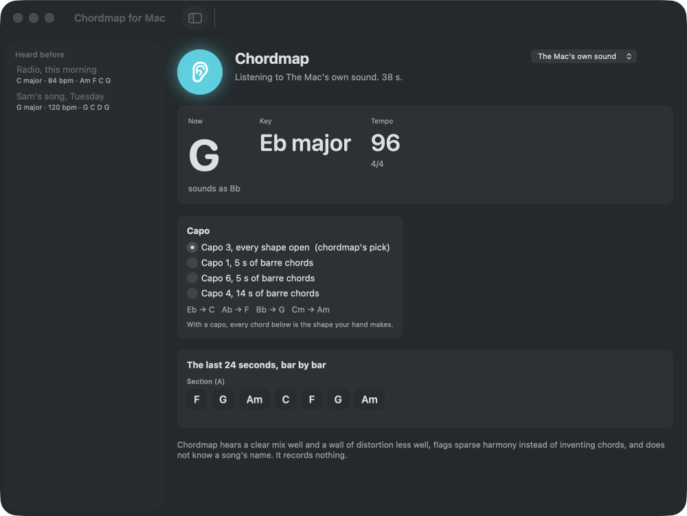
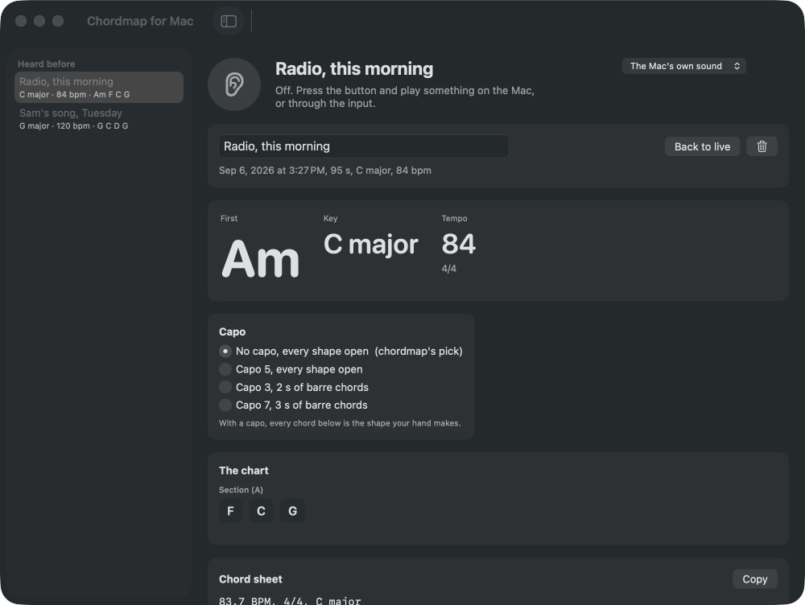

Your music. Charts, stems, play‑along.
Free.
Drop any song you own. Get the chords, key and tempo, pull the vocals out with AI that runs on your own device, then loop it, slow it down, change the key and play along.
Free and open source
Nothing leaves your browser
AI stems run on your device
Drop a song here
or click to choose. MP3, M4A, WAV, FLAC and OGG, whatever your browser can play. Several at once is fine. No account, no upload, no fee.
Recent charts kept in this browser, charts only, never audio
🎼Chart itTempo with tap and half or double, key, chords on every beat, bars grouped into verse, chorus or hook, the capo that makes it easiest, and fingering diagrams for guitar or ukulele.
🎤Free AI stemsVocals, drums, bass and the rest, separated on your own machine. Instrumental and a cappella in seconds on a GPU. The model downloads in; your song never goes out.
🎸Play alongLoop any section, play at 50 to 100 percent speed without changing pitch, shift the key up or down six semitones, mute the vocals or the drums, or play over the beat alone.
🌈See itA waveform map tinted by section, a footer that shows the last three, current and next three chords, and full-screen visualizers for the band or for the room.
✏️Make it yoursFix any chord or section name, keep charts in this browser, share a chart by link, download text, ChordPro or MIDI, print a clean sheet.
🔒Yours to keepMIT licensed, no analytics, works offline after the first visit, installs as an app on phone and desktop. Band, hip hop and dance modes.
What a chart looks like
92BPM · 4/4GmajorCapo 0A B A B C B
How it worksClassic music analysis for the chart, written in Rust and run as WebAssembly. Stem separation is the MIT KUIELab MDX-Net model running in your browser, on the GPU when you have one. Nothing is sent anywhere.
What it gets rightSteady-tempo pop, rock, folk, worship and hip hop in 4/4 or 3/4, with major, minor and seventh chords. Around three in four chords on a typical mix, better after charting from the stems. Vocals separate cleanly.
What it gets wrongSuspended, diminished and slash chords come back as the nearest chord. Rubato confuses the beat grid. Half or double tempo happens; the buttons fix it. Stems from dense mixes have some bleed. Edit mode fixes the rest.
Also a Mac app
Chordmap for Mac
The same engine, listening to whatever the Mac is playing, in any app, and charting it live: the chord now, the key, the tempo, the bars by section, and where the capo goes so the open shapes play it. Stop, and the whole listen is kept with its chord sheet. A guitar into an audio interface works too. It hears; it never records.
Download for macOS Free, open source. macOS 14 or later, Apple Silicon. Source and Help

